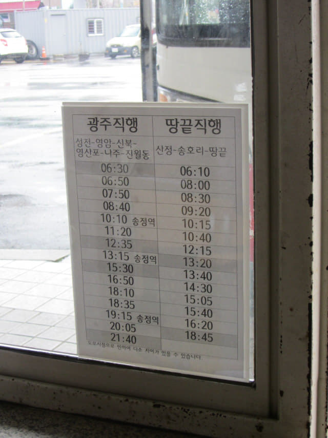
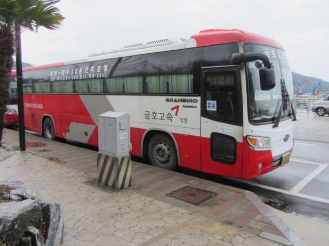

我們在早上八時十五分離開 moa Motel, 步行五分鐘便抵達海南綜合巴士客運站, 準備將背囊寄存在車站大堂內的置物箱, 怎料弄了半小時多, 在當地乘客及車站職員的協助下, 都無法通過付款這步驟, 最後確定置物箱的電子系統是壞的, 根本無法使用! 我們原本打算乘早上 8:50 的巴士往土末, 便匆匆在開車前走往售票處購票, 準備負著背囊往土末! 買了車票後, 才知道開車時間是早上 9:20, 並不是 8:50! 也好, 可以喘喘氣, 收拾緊張的心情和怒氣。
在候車大堂坐了一會, 心神稍定後, 看見離開車還有半小時, 便想起不如返回 moa Motel, 試試可不可以寄存我們的行李, 但最大問題是: 汽車酒店沒有登記顧客資料, 可能根本連顧客的樣貌是如何也不知道, 只靠手中的鑰匙來識別, 但我們的鑰匙在離開時已交回服務台的盒子內, 如何知道我們是酒店的顧客? 更何況言語不通!
酒店服務員熱心幫助 成功將背囊寄放在服務台內
但凡事總要嘗試才知道結果, 總好坐在車站內怨天尤人。接著便冒雨硬著頭皮返回酒店, 走到服務台前, 戰戰兢兢的敲敲服務台黑漆漆的窗, 一位男子彎腰望望我們, 我們指指背囊, 表示想寄存我們的行李, 他立即「耍手擰頭」, 估計應該說現在太早, 還未可以 Check In! 這時可心急了, 便馬上指著放鑰匙的盒子, 表示我們是你們的客人, 只是我們的鑰匙剛才已經放在盒子內。
在服務台醞釀了一會, 另一位服務員回來, 是一位年輕少女, 我們記得她好像是昨天接待我們的那位服務員, 因為我們要問房租價錢, 又要取鑰匙檢查房間及付款, 所以對她還有些印象; 畢竟這裡的外國客人不會多, 甚至可能只有我們兩個, 所以當我們重複先前的要求, 她好像很快便明白。
接著她利用用手機的 Google Translate 和我們溝通, 幸好現在有這個工具! 否則真不知雞如何同鴨溝通了! 當然最主要是她的熱心幫助! 換上其他人, 可能為了免麻煩, 「耍手擰頭」便算了!
「What do you want?」她將手機遞來給我們看。
我們在她手機的鍵盤上輸入, 盡量簡單直接:「We want to keep our luggage here.」
接著她將英文翻譯成韓文, 看完後, 又將一段韓文翻譯成英文給我們看: 「You want to go out, so you want to keep your luggage in our motel?」
哈哈~~~ 她明白了! 我們當然馬上點頭表示對啦! 我一向對 Google Translate 的翻譯都有不知所謂的評價, 但這次卻出奇的準確, 天助我耶!
她又將一段韓文翻譯成英文給我們看: 「How long will your luggage keep here? When will you pick up your luggage?」
因恐怕存放太久會被拒絕, 所以馬上決定取消大興寺這行程, 這樣便可以在中午時段回來, 便在鍵盤上輸入: 「1:00 PM」
她也很小心, 又將一段韓文翻譯成英文給我們看: 「You want to keep your luggage here until 1:00 PM today?」
我們連忙齊齊說: 「Ne!」
接著將我們的背囊交給了她, 除了多說幾次「Cum Sa Mi Da」外, 也不知如何感激她的熱心幫忙。
衷心推薦海南 moa Motel 給大家! 再一次感激 海南 moa Motel 服務員的熱心幫忙!
將行李寄放在酒店後, 滿心歡喜的走回海南綜合巴士客運站。返回車站大堂, 差不多早上九時十分, 離開車還有十多分鐘, 便在車站內逛逛。
往土末 (땅끝)的巴士是在❸號月台登車。

❸號月台出口的玻璃窗張貼了一張時刻表, 會否就是海南 (해남) 往土末 (땅끝) 的巴士時刻表? 班次頗為頻密的。如果不是置物箱的問題, 我們應該搭乘了早上 8:30 的巴士往土末, 現在已經到了目的地!

往土末的巴士在早上九時十五分駛來靠站, 連同我們, 全車只有三位乘客。在這麼惡劣的天氣, 尤其是位於韓國本土最南端的土末, 風勢尤其強勁, 當遇上大雨……., 有誰會選擇今天去……., 除了……。
巴士準時於早上九時二十分從海南綜合巴士客運站開出。沿途的雨勢完全沒有緩和, 看來天氣突然轉好的奇蹟不會出現。
巴士約早上九時五十分在一個巴士站停靠了一會, 車上的另一位乘客也在這裡下了車, 果然只有我們兩個去土末。
巴士約於早上十時十分抵達終點站 — 土末。
